Predict which Codex instructions enter context
On this page
Back to implementation studies · Download the editable study


Make a directory fixture and predict the exact instruction sources and order. Check discovery, selection and truncation as distinct behaviors.
Start offline
Work the case below before you inspect the original source. The trace, exercise and worked answers are complete offline. The local Trace Rollup instructions give you a second project file. Identify the checks a reader should extract after discovery. The optional upstream links at the end need an internet connection.
Work a directory by hand
Use one trusted project and an ASCII fixture. Put a project marker in
/demo. Start the process in /demo/lib/queue.
The root has AGENTS.md with contents ROOT. The
lib directory has AGENTS.md with
GEN and AGENTS.override.md with
LIB!. The leaf has TEAM.md with
LEAF. Set project_doc_fallback_filenames to
include TEAM.md. Treat every listed file as regular and
omit trailing newlines. Walk from the marker directory to the working
directory. In each directory, choose the first regular file in this
order: override, default, fallback.
| Directory | Selected file | Bytes before read | Bytes after read |
|---|---|---|---|
/demo |
AGENTS.md |
9 | 5 |
/demo/lib |
AGENTS.override.md |
5 | 1 |
/demo/lib/queue |
TEAM.md |
1 | 0 |
With a nine-byte budget, the project text that reaches the assembler
comes from ROOT, LIB! and the first byte
L. The read loop emits a truncation warning for the leaf.
Global user instructions are a distinct input. This table traces the
repository files only.
Swap the process directory to /demo/lib. The leaf file
falls outside the discovery path. The fixture illustrates why a task
launched from the repository root can get different instructions from a
task launched below it. You can diagnose the source list without asking
a model what it remembers.
Change one condition
Replace AGENTS.override.md with a directory of the same
name. Predict the new source order before you check the worked answer.
The default file in lib now qualifies. Keep the result of
this case and the original case side by side.
At a budget of eight bytes, the root and lib files use
all bytes. The leaf probe may discover the candidate, but the read loop
stops before it reads the leaf. This failure can look like a priority
rule when someone reads only the final context. Report separate columns
for discovery, bytes read and model-visible text.
A version can change the behavior. Use the tag in the code link when you explain this trace. A test that issues a natural-language request to a model checks model behavior too. Test file selection directly when you need to prove selection.
Adapt the trace
Build a temporary directory with a root, a nested directory and a sibling. Predict sources for each start directory. Add a third candidate file in one directory. Add an ASCII file that exceeds the remaining budget by one byte. If you have the Codex source available, locate the repository's existing named tests. Otherwise, implement only a local fixture simulator and label its outputs as predictions.
Check your solution
Your trace names the selected path at each level and the skipped candidates. It shows where the budget first blocks or cuts a read. The sibling has no effect. The observed or simulated result states the tag and working directory.
Retrieve from memory
- Which filename wins when the override and default are regular files?
- How can a file be discovered and still contribute no bytes?
- Why does a model answer alone give weak evidence about discovery?
Show worked answers
- AGENTS.override.md comes first in the per-directory candidate order.
- The byte counter can reach zero before the read loop reaches that discovered path.
- The answer depends on model behavior as well as loaded context. Inspect the selected paths and budget directly.
Optional source inspection
Read Custom
instructions with AGENTS.md at “How Codex discovers guidance.” Then
open codex-rs/core/src/agents_md.rs
at release tag rust-v0.171.0. Read
load_project_instructions, read_agents_md,
agents_md_paths and candidate_filenames in
that order. Look at agents_md_tests.rs
for total_byte_limit_truncates_later_project_docs,
agents_local_md_preferred and
override_directory_falls_back_to_agents_md_file. The public
docs are mutable and were read on 2026-11-20.
Write down the trusted-project check and byte budget first. In
agents_md_paths, find the nearest project marker, then
trace how the directory list reverses from leaf-first to root-first. In
candidate_filenames, check the override, default and
configured fallback order. The probe for each directory selects the
first candidate that is a file. Then follow the read loop and its
warning branches.